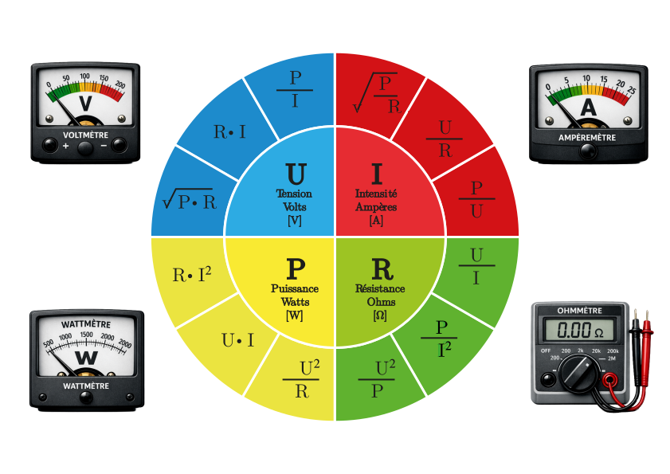

01. Loi d'Ohm
⚡ La Roue d'Ohm

💡 Roue d'Ohm avec les 4 grandeurs : I (Courant - Ampères [A]), U (Tension - Volts [V]), P (Puissance - Watts [W]), R (Résistance - Ohms [Ω])
(En monophasé, uniquement valable pour les circuits purement ohmiques.)
| Nom de la formule | Expression littérale | Symboles de grandeurs et d'unités | Explication | Dessin |
|---|---|---|---|---|
| Formule de base | $U = R \cdot I$ | U: tension [V] I: courant [A] R: résistance [Ω] |
La tension est proportionnelle au courant et à la résistance | |
| Courant | $I = \frac{U}{R}$ | Calcul du courant | Le courant diminue quand la résistance augmente | |
| Résistance | $R = \frac{U}{I}$ | Calcul de la résistance | Rapport entre tension et courant |
01.2 Résistance d'un conducteur
| Nom de la formule | Expression littérale | Symboles de grandeurs et d'unités | Explication | Dessin |
|---|---|---|---|---|
| Résistance d'un conducteur | \( R = \frac{\rho \cdot l}{A} \) | ρ: résistivité [Ω·mm²/m] l: longueur [m] A: section [mm²] |
Plus le conducteur est long et fin, plus la résistance augmente | |
| Longueur du conducteur | \( l = \frac{Rc \cdot A}{\rho} \) | Calcul de la longueur | Permet de calculer la longueur maximale d'un fil ou conducteur | |
| Longueur du câble ou de la ligne | \( R_l = \frac{\rho \cdot 2 \cdot l}{A} = [\Omega] \) | Calcul de la longueur totale | Permet de calculer la longueur maximale de la ligne ou du câble | |
| \( \rho = \frac{R_l \cdot A}{2 \cdot l} = [\Omega \cdot mm^2/m] \) | ||||
| \( l = \frac{R_l \cdot A}{\rho \cdot 2} = [m] \) | ||||
| \( A = \frac{\rho \cdot 2 \cdot l}{R_l} = [mm^2] \) | ||||
| Section du conducteur | \( A = \frac{\rho \cdot l}{R} \) | Calcul de la section | Section nécessaire pour une résistance donnée | |
| Section ronde (diamètre) | \( A = \frac{\pi \cdot d^2}{4} \) | d: diamètre [mm] | Calcul de la section à partir du diamètre | |
| Diamètre (section) | \( d = \sqrt{\frac{4 \cdot A}{\pi}} \) | Calcul du diamètre | Diamètre nécessaire pour une section donnée |
📊 Résistivité des matériaux
| Matériau | ρ [Ω·mm²/m] | Matériau | ρ [Ω·mm²/m] |
|---|---|---|---|
| Aldrey | 0,033 | Nickel | 0,07 |
| Aluminium | 0,029 | Or | 0,023 |
| Argent | 0,0165 | Platine | 0,11 |
| Cobalt | 0,057 | Plomb | 0,22 |
| Cuivre | 0,0175 | Tungstène | 0,06 |
| Étain | 0,12 | Zinc | 0,063 |
| Fer | 0,13 | Chrome-nickel | 1,1 |
| Invar | 0,75 | Constantan | 0,5 |
| Laiton | 0,075 | Manganine | 0,43 |
| Mercure | 0,958 | Nickeline | 0,42 |